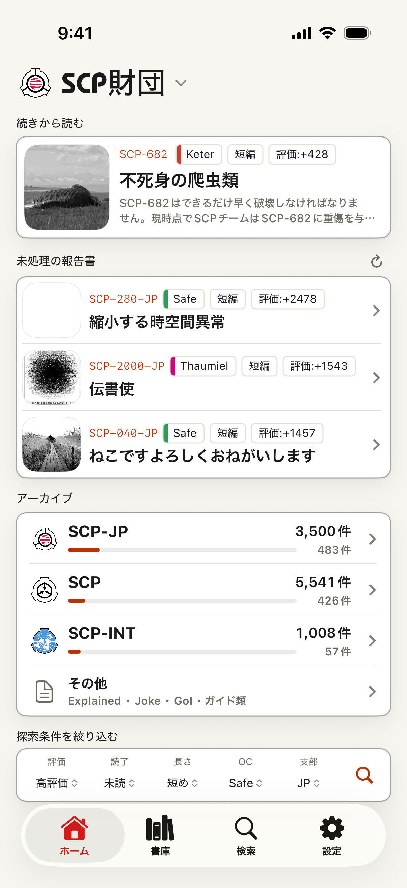
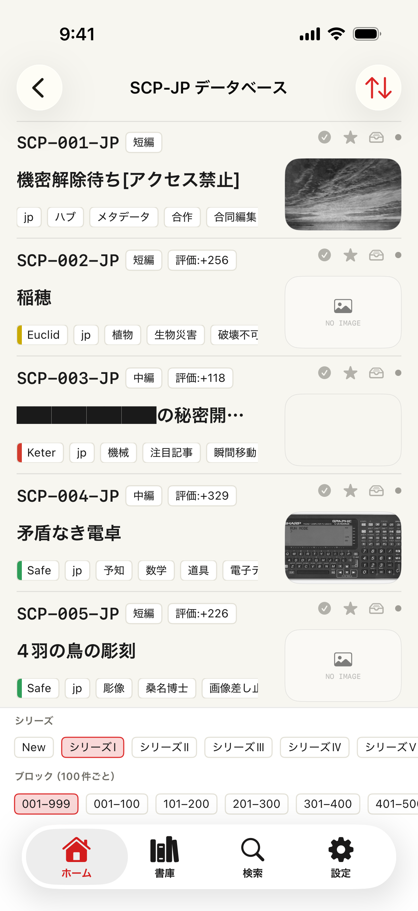
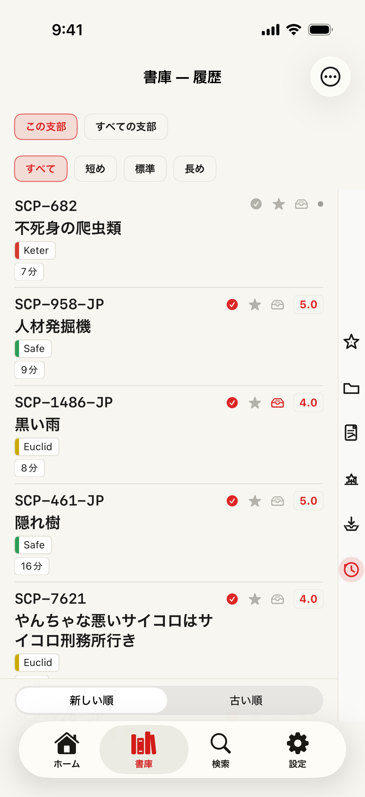
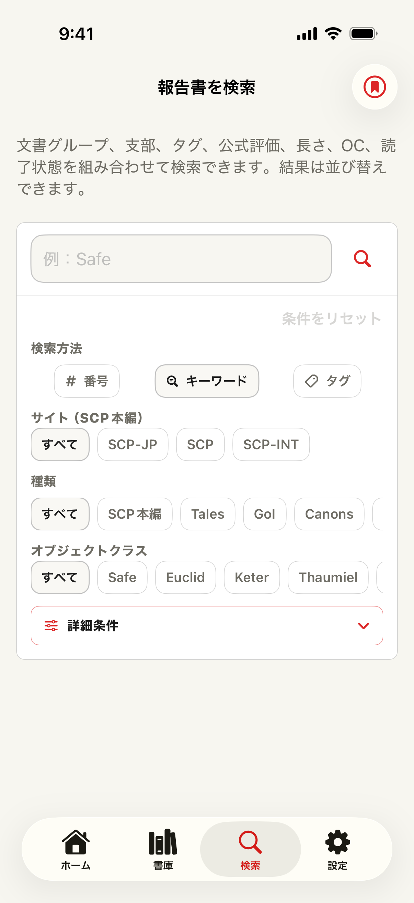

機能概要
読みたい報告書を見つけ、あとからきちんと戻る
SCP Docs は、書庫の入口、検索、リーダー操作、個人の読書状態をひとつのネイティブ iOS アプリにまとめます。最近のアップデートで、読むだけでなく、見つける、保存する、聴く、共有する、記録するところまで扱える読書ワークスペースになりました。

スクリーンショット
ワークフローに対応した画面



書庫とライブラリの流れ
書庫リストから自分の読書棚へ
ホームを書庫の地図として使う
- 支部を選ぶ
- 英語、日本語、フランス語、ロシア語、韓国語、スペイン語を選択できます。ホーム、検索、一覧、記事リンク、アプリ言語がその支部の文脈に揃います。
- ディレクトリから始める
- SCP記事、Tales、Canons、Canonシリーズ、GoI、Joke SCP、SCP-EX、コレクション、新着記事、ガイド類を、番号を知らない状態から探せます。各カタログには「未読のみ」フィルタ、番号順・公式評価順の並び替え、各支部の評価上位記事をまとめた「評価の高い記事」レンズを備えます。
- 分かっている時は検索へ
- 番号やタイトル検索は無料で使えます。最近の検索はワンタップのチップで再利用できます。プレミアムの高度な検索ではタグ、Object Class、本文、メモ、読書状態、公式評価、長さ、保存条件まで絞り込めます。
閲覧をライブラリ状態に変える
- 記事を保存する
- ブックマーク、後で読む、評価、メモを使うと、記事がただのページではなく自分の読書棚に残ります。
- 文脈ごと再開する
- 履歴、続きから読む、読了状態、評価、メモ、スクロール位置から、同じ報告書やシリーズに戻れます。記事は前回のスクロール位置から自動的に開き、「後で読む」に入れた記事は自動でオフライン保存されます。
- 長い読書を整理する
- プレミアムでは保存上限拡張、ブックマークフォルダ、メモ編集、iCloud Drive同期、対象記事のオフライン保存を利用できます。
使い分けガイド
目的別に使う場所
- 特定の記事を決めずに探したい
- ホームで支部を選び、SCP、SCP-INT、Stories、Others などの書庫ルートを開きます。カタログ画面ではシリーズや番号ブロックで移動でき、タイトル、Object Class、タグ、スコア、サムネイルを見ながら探せます。
- 番号、タイトル、タグ、Object Class が分かっている
- 検索を使います。番号・タイトル検索は通常利用でき、プレミアムの高度な検索では文書種別、支部、タグ、公式評価、長さ、Object Class、読書状態、メモまで絞り込めます。
- あとで読み返したい記事を見つけた
- リーダーやライブラリからブックマーク、後で読む、評価、メモ、フォルダに保存します。後から記憶やブラウザ履歴に頼らずライブラリで見つけられます。
- シリーズを途中で止めた
- 続きから読む、ライブラリ履歴、保存済みスクロール位置、読了状態を使うと、同じ報告書や進捗に戻れます。
できること
主な機能
Branches
英語・日本語・フランス語・ロシア語・韓国語・スペイン語の書庫
支部を切り替えると、ホーム、検索、一覧、記事リンク先、アプリ言語が切り替わり、それぞれの書庫をその文脈で読めます。
Directories
整理された書庫ルート
SCP記事、Tales、Canons、Canonシリーズ、GoI、Joke SCP、SCP-EX、コレクション、新着記事、ガイド類へ移動できます。書庫の索引は「記事フィード」「世界観」「評価・発見」「ガイド資料」の4セクションに整理しています。
Catalogs
未読フィルタと評価の高い記事レンズ
各カタログに「未読のみ」フィルタと番号順・公式評価順の並び替えを追加。新しい「評価の高い記事」レンズは、各支部の評価上位記事をひとつの場所にまとめます。
Search
無料の高速検索とプレミアム絞り込み
SCP番号で即オープンし、タイトル、タグ、オブジェクトクラスで検索できます。最近の検索はワンタップのチップで再利用できます。プレミアムでは対象文書、メモ、読書状態、公式評価、長さ、保存検索まで扱えます。
Reader
集中できる記事ビュー
文字設定、落ち着いたテーマ、改善したダークモード、トップへ戻る操作、オフライン保存、特殊レイアウト記事の再現性を備えます。
Library
戻ってくるための場所
閲覧履歴、読了状態、評価、ブックマーク、後で読む、スクロール位置、メモ、続きから読むデータを端末内で整理します。記事は前回のスクロール位置から自動的に開き、「後で読む」に入れた記事は自動でオフライン保存されます。
Share
カードで共有
記事や選んだリストを、X などで共有しやすいカード画像にできます。テンプレートとコメントにも対応します。
Premium
統計、読み上げ、オフライン
読書統計、アプリ言語ではなく記事自体の言語に対応した読み上げ、メモ編集、保存上限拡張、広告非表示、オフライン保存が長い読書を支えます。
Sync
iCloudで個人の整理を同期
利用可能な場合、読書状態、メモ、保存検索、ブックマークフォルダを自分の iCloud Drive 経由で同期できます。保存検索は新着一致を端末上で通知できます。
Access tiers
無料とプレミアムの違い
| 機能 | 無料 | プレミアム |
|---|---|---|
| 番号・タイトル検索 | ✓ | ✓ |
| 書庫ディレクトリとカタログ閲覧 | ✓ | ✓ |
| 履歴・ブックマーク・後で読む・評価 | ✓ | ✓ |
| リーダーのテーマ・文字組み・ダークモード | ✓ | ✓ |
| 広告 | 表示 | 非表示 |
| 保存上限 | 標準 | 拡張 |
| 高度な検索フィルタ | — | ✓ |
| メモ編集 | — | ✓ |
| オフライン保存 | — | ✓ |
| 読書統計 | — | ✓ |
| 読み上げ（TTS） | — | ✓ |
| 保存検索と新着通知 | — | ✓ |
| ブックマークフォルダと iCloud 同期 | — | ✓ |
プレミアムは App Store の自動更新購読として提供されます。利用可能な場合は、リワード広告で購読なしに一時的なプレミアムアクセスを利用できます。